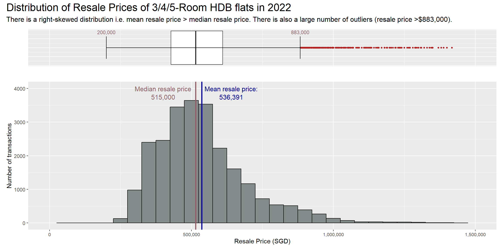
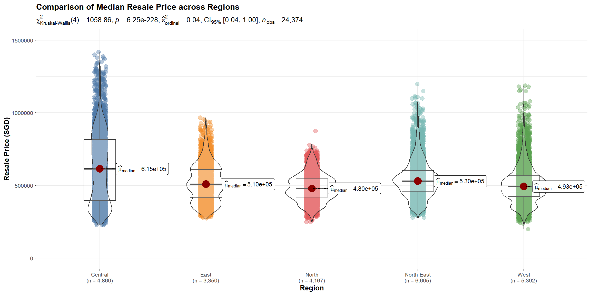
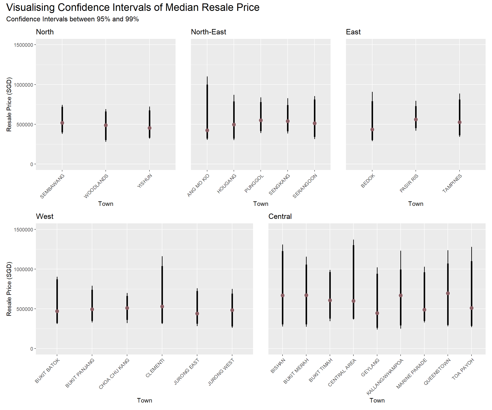
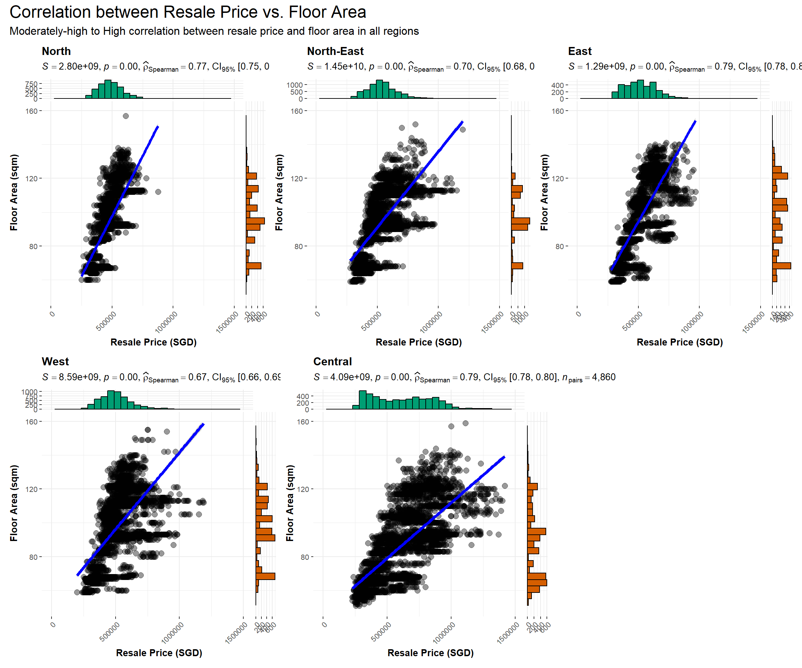
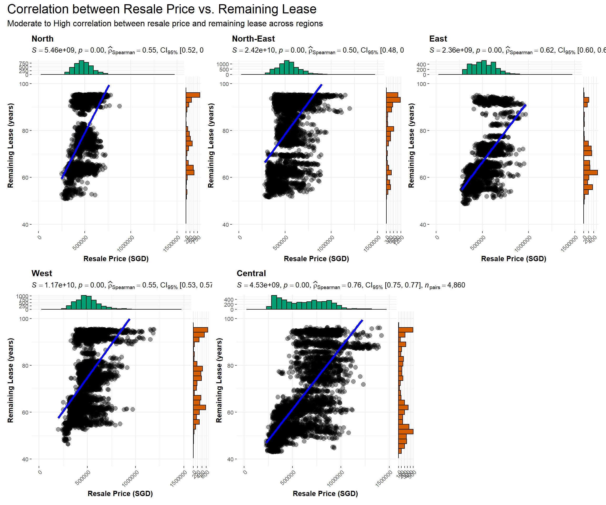
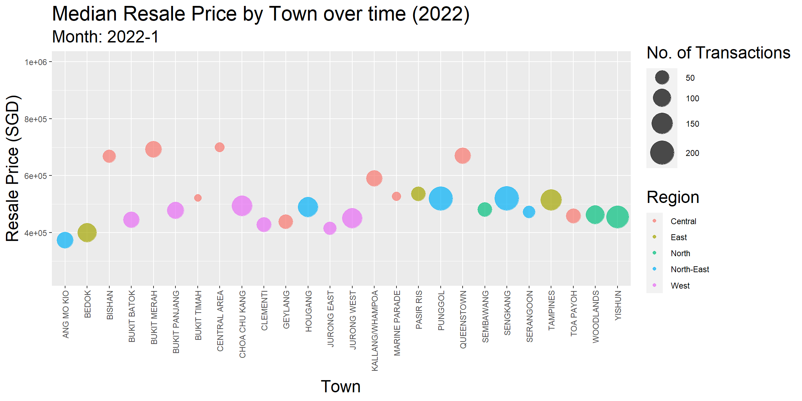

In this Take Home Exercise, salient patterns of the resale prices of public housing property by residential towns and estates in Singapore are uncovered using analytical visualisation techniques. The focus of this exercise will be on 3-ROOM, 4-ROOM and 5-ROOM types transacted in 2022.
Data Source
The data “Resale flat princes based on registration date from Jan-2017 onwards” used for this Take Home Exercise is obtained from Data.gov.sg in csv format.
# A tibble: 6 × 11
month town flat_…¹ block stree…² store…³ floor…⁴ flat_…⁵ lease…⁶ remai…⁷
<chr> <chr> <chr> <chr> <chr> <chr> <dbl> <chr> <dbl> <chr>
1 2017-01 ANG MO … 2 ROOM 406 ANG MO… 10 TO … 44 Improv… 1979 61 yea…
2 2017-01 ANG MO … 3 ROOM 108 ANG MO… 01 TO … 67 New Ge… 1978 60 yea…
3 2017-01 ANG MO … 3 ROOM 602 ANG MO… 01 TO … 67 New Ge… 1980 62 yea…
4 2017-01 ANG MO … 3 ROOM 465 ANG MO… 04 TO … 68 New Ge… 1980 62 yea…
5 2017-01 ANG MO … 3 ROOM 601 ANG MO… 01 TO … 67 New Ge… 1980 62 yea…
6 2017-01 ANG MO … 3 ROOM 150 ANG MO… 01 TO … 68 New Ge… 1981 63 yea…
# … with 1 more variable: resale_price <dbl>, and abbreviated variable names
# ¹flat_type, ²street_name, ³storey_range, ⁴floor_area_sqm, ⁵flat_model,
# ⁶lease_commence_date, ⁷remaining_lease
It can be seen that the column “month” is shown as a string rather than as dates - this will need to be transformed for ease of analysis. Likewise for the “remaining_lease” column, which will be transformed into a common measure of time i.e. in years.
As there are a total of 26 towns, the towns will also be grouped into 5 main regions, namely “North”, “North East”, “East”, “Central” and “West”.
Likewise, there are too many floor range categories as the floor levels were coded in groups of 3 floors. We will recode this variable into groups of 9 floors, up until the 27th floor, before grouping them as 28 floors and higher (since most HDB apartment blocks are built with 30 floors and less).
Since the focus of this analysis is only on transactions that happened in 2022 and for 3-room, 4-room and 5-room HDB flats, we will also need to filter the data accordingly. Lastly, we will also drop columns which we do not need (e.g. “block”, “street name”) for the analysis.
Show code
#Transform datahdb_data_cleaned <- hdb_data %>%mutate(trans_date =as.Date(paste0(month,"-01"))) %>%mutate(remaining_lease =as.integer(str_extract(remaining_lease, "[0-9]+")) +ifelse(is.na(str_extract(remaining_lease, " [0-9]+")), 0, as.integer(str_extract(remaining_lease," [0-9]+"))/12)) %>%mutate(month =as.integer(str_extract(string=month, pattern="([0-9]+)-([0-9]+)", group=2)))#Add Regionhdb_data_cleaned$region <-case_when( hdb_data_cleaned$town %in%c("SEMBAWANG","WOODLANDS","YISHUN") ~"North", hdb_data_cleaned$town %in%c("ANG MO KIO","HOUGANG","PUNGGOL","SENGKANG","SERANGOON") ~"North-East", hdb_data_cleaned$town %in%c("BEDOK","PASIR RIS","TAMPINES") ~"East", hdb_data_cleaned$town %in%c("BISHAN","BUKIT MERAH","BUKIT TIMAH","CENTRAL AREA","GEYLANG","KALLANG/WHAMPOA","MARINE PARADE","QUEENSTOWN","TOA PAYOH") ~"Central", hdb_data_cleaned$town %in%c("BUKIT BATOK","BUKIT PANJANG","CHOA CHU KANG","CLEMENTI","JURONG EAST","JURONG WEST") ~"West")#Recode Storey Rangehdb_data_cleaned$storey_recoded <-case_when( hdb_data_cleaned$storey_range %in%c("01 TO 03","04 TO 06","07 TO 09") ~"01 - 09", hdb_data_cleaned$storey_range %in%c("10 TO 12","13 TO 15","16 TO 18") ~"10 - 18", hdb_data_cleaned$storey_range %in%c("19 TO 21","22 TO 24","25 TO 27") ~"19 - 27", hdb_data_cleaned$storey_range %in%c("28 TO 30","31 TO 33","34 TO 36","37 TO 39","40 TO 42","43 TO 45","46 TO 48","49 TO 51") ~"28 and above")#Filter for 3RM, 4RM, 5RM transactions in 2022hdb_2022 <- hdb_data_cleaned %>%filter(between(trans_date, as.Date("2022-01-01"), as.Date("2022-12-31"))) %>%filter(flat_type %in%c("3 ROOM", "4 ROOM", "5 ROOM")) %>%select("town", "region", "flat_type", "storey_recoded", "floor_area_sqm", "remaining_lease", "resale_price", "trans_date", "month")
Distribution of Resale Prices across Regions and Towns
Normality Assumption
We will first take a look at the distribution of resale prices nationwide for the target property types using a histogram and a boxplot.
Show code
#computing summary statistics of mean, median and lower and upper whiskers in boxplotresale_mean <-round(mean(hdb_2022$resale_price))resale_median <-round(median(hdb_2022$resale_price))ymax <-as.numeric(round((IQR(hdb_2022$resale_price)*1.5) +quantile(hdb_2022$resale_price,0.75)))ymin <-as.integer(min(hdb_2022$resale_price))#plotting histogramh <-ggplot(data = hdb_2022, aes(x = resale_price)) +geom_histogram(color="black", fill="azure4", binwidth =50000) +scale_x_continuous(limits =c(0,1500000), labels = scales::comma) +labs(x ="Resale Price (SGD)", y ="Number of transactions") +geom_vline(aes(xintercept = resale_mean), col="darkblue", linewidth=1) +annotate("text", x=640000, y=4000, label="Mean resale price:", size=4, color="darkblue") +annotate("text", x=640000, y=3750, label=format(resale_mean, big.mark =","),size=4, color="darkblue") +geom_vline(aes(xintercept = resale_median), col="lightpink4", linewidth=1) +annotate("text", x=400000, y=4000, label="Median resale price", size=4, color="lightpink4") +annotate("text", x=400000, y=3750, label=format(resale_median, big.mark =","),size=4, color="lightpink4") +theme(axis.text.x =element_text(size=8))#plotting boxplotb <-ggplot(data = hdb_2022, aes(y = resale_price)) +geom_boxplot(outlier.colour="firebrick", outlier.shape=16,outlier.size=1, notch=FALSE) +coord_flip() +labs(y ="", x ="") +scale_y_continuous(limits =c(0,1500000), labels = scales::comma) +theme(axis.text =element_blank(), axis.ticks =element_blank()) +stat_boxplot(geom="errorbar", width=0.5) +annotate("text", x=0.35, y=ymax, label=format(ymax, big.mark =","), size=3, color="lightpink4") +annotate("text", x=0.35, y=ymin, label=format(ymin, big.mark =","), size=3, color="lightpink4")#combining plotsprice_distri <- b / h +plot_layout(heights =c(1, 4)) price_distri +plot_annotation(title ="Distribution of Resale Prices of 3/4/5-Room HDB flats in 2022", subtitle ="There is a right-skewed distribution i.e. mean resale price > median resale price. There is also a large number of outliers (resale price >$883,000).",theme =theme(plot.title =element_text(size =18),plot.subtitle =element_text(size =12)))

The histogram suggests that resale prices may not be normally distributed. We can confirm this by performing a normality assumption test with the following null hypothesis:
H0: Resale prices in 2022 are normally distributed
ad.test(hdb_2022$resale_price)
Anderson-Darling normality test
data: hdb_2022$resale_price
A = 328.27, p-value < 2.2e-16
The results of the Anderson-Darling normality test above suggests sufficient statistical evidence to reject the null hypothesis at 95% confidence level.
Given that resale prices do not conform to a normal distribution, we will need to use non-parametric statistical analysis methods. It would also be inappropriate to use graphs such as funnel plots which require normality assumption.
In addition, given the large number of outliers since in the boxplot above, it would be more appropriate to use the median (instead of mean) in this piece of analysis.
Differences in Resale Prices between Regions and Towns
To uncover salient patterns of resale prices, we will take a look at how the resale prices compare across regions using Krusal-Wallis ANOVA test done at 95% confidence interval with the following null hypothesis:
H0: There is no difference in the median resale price across regions
Show code
#plotting violin plot across regionsggbetweenstats(data = hdb_2022, x = region, y = resale_price,xlab ="Region", ylab ="Resale Price (SGD)",type ="np", pairwise.comparisons = T, pairwise.display ="ns", mean.ci = T, p.adjust.method ="fdr", conf.level =0.95,title ="Comparison of Median Resale Price across Regions",package ="ggthemes", palette ="Tableau_10") +scale_y_continuous(limits =c(0, 1500000))

As the p-value is less than the critical value of 0.05 across all pairs, there is enough statistical evidence for us to reject the null hypothesis. As such, we can conclude that there is a difference in median resale price across regions.
The price is highest in the Central region and lowest in the North.
Next, we will look into whether there is a difference in median resale price between towns within each region. Again using Krusal-Wallis ANOVA test done at 95% confidence interval, we will test the following null hypothesis:
H0: There is no difference in the median resale price across towns in each region
In the North, North-East and East Regions, the p-value is lower than the critical value of 0.05. Since there is enough statistical evidence for us to reject the null hypothesis, we can conclude that there is a difference in median resale price across towns in these regions.
In the West Region, the p-value is less than the critical value of 0.05 for most pairs except Bukit-Batok-Jurong West and Choa Chu Kang-Clementi. There is sufficient statistical evidence for us to reject the null hypothesis for most pairs. Hence, we can conclude that there is a difference in median resale price across most towns in these regions except between (1) Bukit-Batok and Jurong West, and (2) Choa Chu Kang and Clementi.
In the Central Region, as the p-value is lower than the critical value of 0.05 for all pairs involving Geylang, there is sufficient statistical evidence for us to reject the null hypothesis and conclude that the median resale price of Geylang is lower vs. other towns in the Central region.
A similar observation can be made for Toa Payoh where the p-value is less than the critical value of 0.05 for all pairs involving Toa Payoh except Marine Parade. Hence, there is sufficient statistical evidence for us to reject the null hypothesis and conclude that the median resale price of Toa Payoh is different vs. other towns in the Central region (except Marine Parade).
However, the above plots focus on a point estimate i.e. the median resale price, which could lead readers to misinterpret it as a precise representation of the true value. As such, there is value in also visualising the uncertainties (such as the standard error, confidence interval, or credible interval) surrounding the point estimate in question.
Show code
#plotting error bar on dot plot across regions and townsn_uncertain <-ggplot(data = hdb_2022 |>filter(region =="North"), aes(x = town, y = resale_price)) +stat_pointinterval(point_interval ="median_qi",.width =c(0.95,0.99),point_color ="lightpink4") +labs(title ="North", x ="Town", y ="Resale Price (SGD)") +theme(axis.text.x =element_text(angle =45, vjust =1, hjust=1)) +scale_y_continuous(limits =c(0, 1500000))ne_uncertain <-ggplot(data = hdb_2022 |>filter(region =="North-East"), aes(x = town, y = resale_price)) +stat_pointinterval(point_interval ="median_qi",.width =c(0.95,0.99),point_color ="lightpink4") +labs(title ="North-East", x ="Town", y ="") +theme(axis.text.x =element_text(angle =45, vjust =1, hjust=1),axis.text.y =element_blank(), axis.ticks.y =element_blank()) +scale_y_continuous(limits =c(0, 1500000))e_uncertain <-ggplot(data = hdb_2022 |>filter(region =="East"), aes(x = town, y = resale_price)) +stat_pointinterval(point_interval ="median_qi",.width =c(0.95,0.99),point_color ="lightpink4") +labs(title ="East", x ="Town", y ="") +theme(axis.text.x =element_text(angle =45, vjust =1, hjust=1),axis.text.y =element_blank(), axis.ticks.y =element_blank()) +scale_y_continuous(limits =c(0, 1500000))w_uncertain <-ggplot(data = hdb_2022 |>filter(region =="West"), aes(x = town, y = resale_price)) +stat_pointinterval(point_interval ="median_qi",.width =c(0.95,0.99),point_color ="lightpink4") +labs(title ="West", x ="Town", y ="Resale Price (SGD)") +theme(axis.text.x =element_text(angle =45, vjust =1, hjust=1)) +scale_y_continuous(limits =c(0, 1500000))c_uncertain <-ggplot(data = hdb_2022 |>filter(region =="Central"), aes(x = town, y = resale_price)) +stat_pointinterval(point_interval ="median_qi",.width =c(0.95,0.99),point_color ="lightpink4") +labs(title ="Central", x ="Town", y ="") +theme(axis.text.x =element_text(angle =45, vjust =1, hjust=1),axis.text.y =element_blank(), axis.ticks.y =element_blank()) +scale_y_continuous(limits =c(0, 1500000))#combining plotsp_uncertain <- (n_uncertain + ne_uncertain + e_uncertain) / (w_uncertain + c_uncertain)p_uncertain +plot_annotation(title ="Visualising Confidence Intervals of Median Resale Price", subtitle ="Confidence Intervals between 95% and 99%",theme =theme(plot.title =element_text(size =18),plot.subtitle =element_text(size =12)))

In general, towns in the North and East regions have lower uncertainties while towns in the Central have the highest uncertainties. This suggests large presence of outliers in the Central Region or more varied flat types or models, while the reverse is true for flats in the North and East regions.
Notably, Ang Mo Kio (in the North-East) and Clementi (in the West) have a level of uncertainty that is similar to towns in the Central region.
Factors Affecting Resale Prices
Next, we will look into what could have affected the difference in resale prices between the towns.
Flat Type vs. Resale Price
The first factor that we could look into would be the association between flat type within each region and resale price using the Krusal-Wallis ANOVA test done at 95% confidence interval with the following null hypothesis:
H0: There is no association between resale price and flat type
As p-value is less than the critical value of 0.05 across all pairs in all regions, there is enough statistical evidence for us to reject the null hypothesis. As such, we can conclude that an association exists between flat type and remaining lease.
Resale prices increase significantly from 3 Room to 4 Room to 5 Room flats.
Floor Area vs. Resale Price
The next factor to look into would be the relationship between resale price and floor area. We will use the non-parametric Spearman rank-based correlation analysis instead of Pearson correlation since the data is not normally distributed.
Show code
#plotting correlation between resale price and floor area across regionsn_correl <-ggscatterstats(data = hdb_2022 |>filter(region =="North"), x = resale_price, y = floor_area_sqm,type ="nonparametric") +theme(axis.text.x =element_text(angle =45, vjust =1, hjust=1)) +labs(title ="North", x ="Resale Price (SGD)", y ="Floor Area (sqm)") +scale_x_continuous(limits =c(0, 1500000)) +scale_y_continuous(limits =c(50, 160))ne_correl <-ggscatterstats(data = hdb_2022 |>filter(region =="North-East"), x = resale_price, y = floor_area_sqm,type ="nonparametric") +theme(axis.text.x =element_text(angle =45, vjust =1, hjust=1)) +labs(title ="North-East", x ="Resale Price (SGD)", y ="Floor Area (sqm)") +scale_x_continuous(limits =c(0, 1500000)) +scale_y_continuous(limits =c(50, 160))e_correl <-ggscatterstats(data = hdb_2022 |>filter(region =="East"), x = resale_price, y = floor_area_sqm,type ="nonparametric") +theme(axis.text.x =element_text(angle =45, vjust =1, hjust=1)) +labs(title ="East", x ="Resale Price (SGD)", y ="Floor Area (sqm)") +scale_x_continuous(limits =c(0, 1500000)) +scale_y_continuous(limits =c(50, 160))w_correl <-ggscatterstats(data = hdb_2022 |>filter(region =="West"), x = resale_price, y = floor_area_sqm,type ="nonparametric") +theme(axis.text.x =element_text(angle =45, vjust =1, hjust=1)) +labs(title ="West", x ="Resale Price (SGD)", y ="Floor Area (sqm)") +scale_x_continuous(limits =c(0, 1500000)) +scale_y_continuous(limits =c(50, 160))c_correl <-ggscatterstats(data = hdb_2022 |>filter(region =="Central"), x = resale_price, y = floor_area_sqm,type ="nonparametric") +theme(axis.text.x =element_text(angle =45, vjust =1, hjust=1)) +labs(title ="Central", x ="Resale Price (SGD)", y ="Floor Area (sqm)") +scale_x_continuous(limits =c(0, 1500000)) +scale_y_continuous(limits =c(50, 160))#combining plotsp_correl <- (n_correl + ne_correl + e_correl) / (w_correl + c_correl +plot_spacer())p_correl +plot_annotation(title ="Correlation between Resale Price vs. Floor Area", subtitle ="Moderately-high to High correlation between resale price and floor area in all regions",theme =theme(plot.title =element_text(size =18),plot.subtitle =element_text(size =12)))

The Spearman correlation coefficient for the North, East and Central regions are greater than 0.7, suggesting high positive correlation between resale price and floor area.
In the North-East and West regions, the Spearman correlation coefficient is 0.7 and 0.67 respectively, suggesting moderately-high positive correlation.
Remaining Lease vs. Resale Price
Another factor to look into would be the remaining lease and how it impacts the resale price. Again, we will use Spearman rank-based correlation analysis instead of Pearson since the data is not normally distributed.
Show code
#plotting correlation between resale price and remaining lease across regionsn_lease <-ggscatterstats(data = hdb_2022 |>filter(region =="North"), x = resale_price, y = remaining_lease,type ="nonparametric") +theme(axis.text.x =element_text(angle =45, vjust =1, hjust=1)) +labs(title ="North", x ="Resale Price (SGD)", y ="Remaining Lease (years)") +scale_x_continuous(limits =c(0, 1500000)) +scale_y_continuous(limits =c(40, 100))ne_lease <-ggscatterstats(data = hdb_2022 |>filter(region =="North-East"), x = resale_price, y = remaining_lease,type ="nonparametric") +theme(axis.text.x =element_text(angle =45, vjust =1, hjust=1)) +labs(title ="North-East", x ="Resale Price (SGD)", y ="Remaining Lease (years)") +scale_x_continuous(limits =c(0, 1500000)) +scale_y_continuous(limits =c(40, 100))e_lease <-ggscatterstats(data = hdb_2022 |>filter(region =="East"), x = resale_price, y = remaining_lease,type ="nonparametric") +theme(axis.text.x =element_text(angle =45, vjust =1, hjust=1)) +labs(title ="East", x ="Resale Price (SGD)", y ="Remaining Lease (years)") +scale_x_continuous(limits =c(0, 1500000)) +scale_y_continuous(limits =c(40, 100))w_lease <-ggscatterstats(data = hdb_2022 |>filter(region =="West"), x = resale_price, y = remaining_lease,type ="nonparametric") +theme(axis.text.x =element_text(angle =45, vjust =1, hjust=1)) +labs(title ="West", x ="Resale Price (SGD)", y ="Remaining Lease (years)") +scale_x_continuous(limits =c(0, 1500000)) +scale_y_continuous(limits =c(40, 100))c_lease <-ggscatterstats(data = hdb_2022 |>filter(region =="Central"), x = resale_price, y = remaining_lease,type ="nonparametric") +theme(axis.text.x =element_text(angle =45, vjust =1, hjust=1)) +labs(title ="Central", x ="Resale Price (SGD)", y ="Remaining Lease (years)") +scale_x_continuous(limits =c(0, 1500000)) +scale_y_continuous(limits =c(40, 100))#combining plotsp_lease <- (n_lease + ne_lease + e_lease) / (w_lease + c_lease +plot_spacer())p_lease +plot_annotation(title ="Correlation between Resale Price vs. Remaining Lease", subtitle ="Moderate to High correlation between resale price and remaining lease across regions",theme =theme(plot.title =element_text(size =18),plot.subtitle =element_text(size =12)))

The Spearman correlation coefficient for the Central region is greater than 0.7, suggesting there is also high positive correlation between resale price and remaining lease in this region.
However, in other regions, the Spearman correlation coefficient is between 0.5 to 0.62, suggesting a moderate positive correlation between resale price and remaining lease.
Floor Level vs. Resale Price
We will also look into the association between floor level of property within each region and resale price using the Krusal-Wallis ANOVA test done at 95% confidence interval with the following null hypothesis:
H0: There is no association between resale price and floor level
With the exception of the North region, as p-value is less than the critical value of 0.05 across all pairs, there is enough statistical evidence for us to reject the null hypothesis and conclude that an association exists between floor level and remaining lease.
In the North region, as p-value is greater than the critical value of 0.05 across all pairs, there is insufficient statistical evidence for us to reject the null hypothesis.
With the exception of the North region, resale prices increase significantly as floor level increases.
Median Resale Price over Time
Lastly, we will plot an animated graph to observe how the median resale price in each town has changed over the course of the year.
Show code
hdb_stats <- hdb_2022 %>%group_by(town, month) %>%mutate(transaction_n =n()) %>%mutate(median_price =median(resale_price)) %>%select(town, region, transaction_n, median_price, month) %>%distinct() %>%arrange(town)ggplot(hdb_stats, aes(x = town, y = median_price, size = transaction_n, colour = region)) +geom_point(alpha =0.7, show.legend = T) +scale_size(range =c(2, 12)) +labs(title ="Median Resale Price by Town over time (2022)",subtitle ="Month: 2022-{as.integer(frame_time)}", x ="Town", y ="Resale Price (SGD)",size ="No. of Transactions", colour ="Region") +transition_time(month) +ease_aes('linear') +theme(axis.text.x =element_text(angle =90, hjust =1, vjust =0.5),title =element_text(size =18)) +scale_y_continuous(limits =c(250000,1000000))

With the exception of towns in the Central Region, the median resale price in most towns generally remains relatively constant or increases at a very slow rate over the months.
The drastic fluctuations observed in Bukit Timah and Central Area are likely due to the very small number of transactions in these towns.
Clementi and Marine Parade are two other towns which also appear to have relatively large fluctuations over the months.
For future work, transactions over a longer period of time (e.g. 4-5 years) can be studied to investigate if seasonality affects resale prices.
Conclusion
From this piece of analysis, we can conclude that in general, there is a difference in median resale price across regions - highest in the Central region and lowest in the North. Except in the Central region, there are also differences in median resale price between towns in each region. In the West, the exception is between (1) Bukit-Batok and Jurong West, and (2) Choa Chu Kang and Clementi where there is no difference in price. Meanwhile within the Central Region, there is no difference in median resale price across most towns except Geylang (lowest within Central Region), Toa Payoh and Marine Parade.
It is also observed that towns in the North and East regions have lower uncertainties while towns in the Central have the highest uncertainties. This suggests large presence of outliers in the Central Region or more varied flat types or models, while the reverse is true for flats in the North and East regions.
When we look into the factors affecting resale price, unsurprisingly, flat type and floor area have similar level of impact on resale prices across all regions. Remaining lease has a stronger influence on resale prices in the Central region, but the effect is less pronounced for the other regions (moderate positive correlation). Floor level also affects resale prices in all regions except the North.